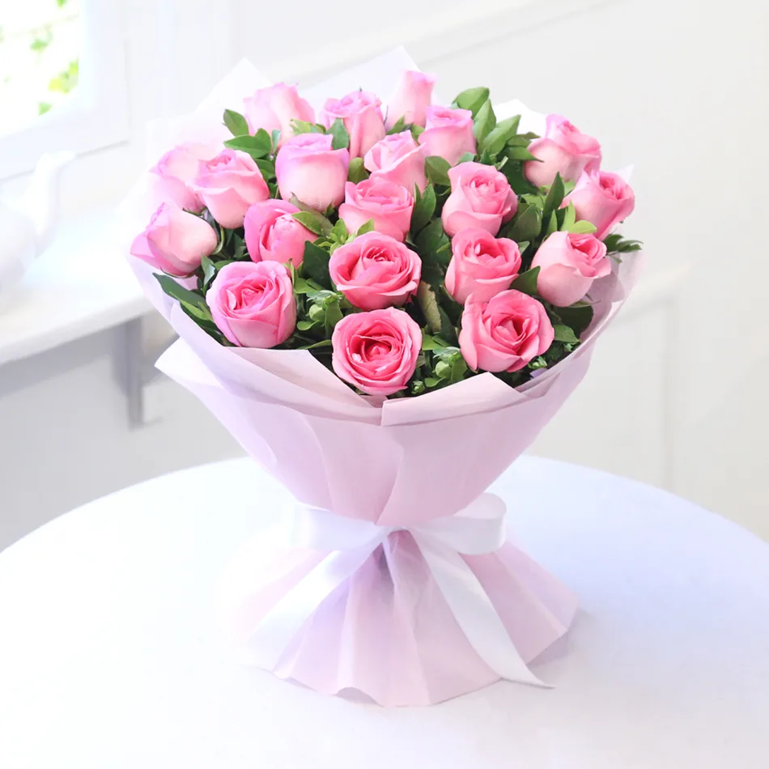

Pink Roses
Origin of Pink Roses
Historical records suggest that the cultivation of roses began in Asia, particularly in China, several
thousand years ago. From there, roses spread to other parts of the world through trade and exploration.
Pink roses have been cherished for their beauty and fragrance for centuries and have become a staple
in gardens and floral arrangements globally.